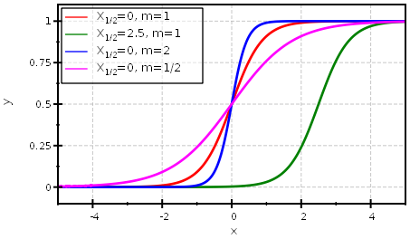

$$qf_commondoc_header.start$$ $$qf_commondoc_header.end$$
Function Definition
$$bmath:f(x)=Y_0+\frac{Y_1-Y_0}{1+10^{\left(X_{1/2}-x\right) \cdot m}}$$
- Here $$math:Y_0, Y_1$$ are the lower and upper limit of the function.
- The parameter $$math:X_{1/2}$$ is the half decay value with $$math:f(X_{1/2})=0.5$$.
- The slope at $$math:x\equiv X_{1/2}$$ is given by $$bmath:\frac{df}{dx}_{x=X_{1/2}}=\frac{(Y_1-Y_0)\cdot m\cdot\mbox{ln}(10)}{4}$$
$$ref:GIRALD2002:Giraldo, Jesús; Vivas, Nuria M.; Vila, Elisabet; Badia, Albert (2002): Assessing the (a)symmetry of concentration-effect curves, Pharmacology & Therapeutics 95(1), p. 21-45, 2002$$
Example

References
$$references$$